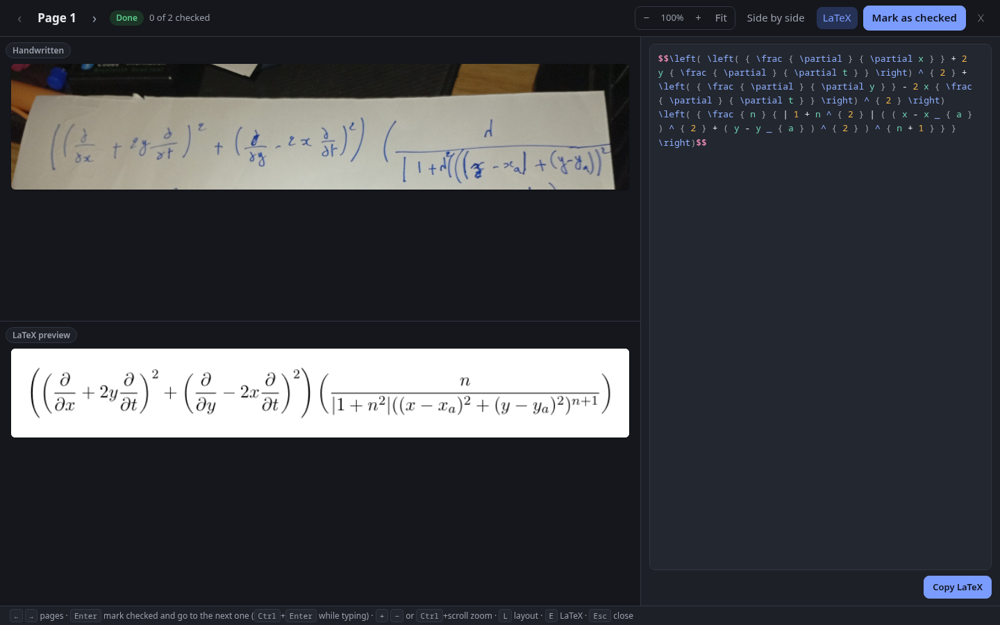
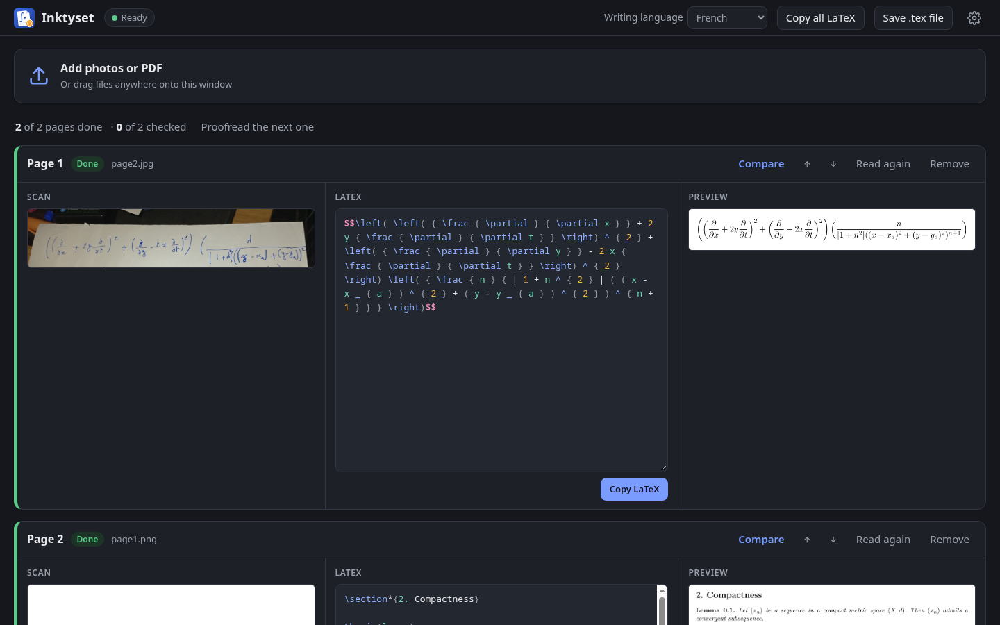

Handwritten pages in,
a typeset document you can trust out.
Inktyset reads photos, scans and PDFs of your handwritten math, turns each page into LaTeX, compiles it, and puts the scan next to the result so you can proofread page by page. Everything runs on your own computer.

Why not just paste a photo into a chat?
A chat model reads one photo. Inktyset is built for the whole stack of pages, and for trusting the result.
Batch and private
Hundreds of pages read in order, overnight if needed. Nothing you add leaves your computer.
Proven to compile
Every page is compiled and shown rendered, not just text that looks right.
Proofreading built in
Scan and rendered page side by side with linked zoom, [??] where the model couldn't
read, a “checked” mark per page.
Faithful
The model is told never to fix your math or complete steps. Chat models happily “correct” it.

Features
- Pages in: drag in photos or PDFs, scan with a scanner (Linux, macOS), or send photos from your phone with Folder Camera (optional).
- A real LaTeX editor: highlighting, matching brackets, search, completion of commands and environments.
- Compare view: one above the other for a formula, side by side for a full page; Enter marks a page checked and moves on.
- Languages: English by default; French, Arabic (right to left), German, Spanish, Italian, Portuguese, Turkish or any other for the prose. Pages mixing French or English with Arabic work too, each word in its own direction. Nothing is translated.
- Your LaTeX or ours: the preview uses the TeX installed on your computer when it works, otherwise a built-in one (Tectonic), downloaded once.
- LaTeX or Typst: pick the output in the header; pages convert to Typst from LaTeX instantly, and back.
- Math first, not only math: prose, lecture notes, lists and tables come out clean too.
Download
Latest release on GitHub.
Requirements
- About 8 GB of free memory for the model.
- A graphics chip with Vulkan (Linux, Windows) or Apple Silicon for speed: a page then takes a minute or two. Without one, the processor reads it, much more slowly. Inktyset checks your computer and tells you what to expect.
- On first start Inktyset downloads the engine (llama.cpp, 36 MB) and the model (Qwen3.5 9B, 6.6 GB), checked before use. Already have the model files? Point Inktyset to them.
Opening it the first time
The installers aren't signed with a paid certificate, so your system asks once:
- Windows: if SmartScreen says “Windows protected your PC”, click More info, then Run anyway.
-
macOS: open the .dmg and drag Inktyset to Applications. The first time, right-click it and
choose Open (or System Settings → Privacy & Security → Open Anyway). If macOS
says the app “is damaged”, run
xattr -dr com.apple.quarantine /Applications/Inktyset.appin Terminal. -
Linux: AppImage: make it executable (
chmod +x Inktyset-*.AppImage) and run it; it updates itself. Or install the .deb / .rpm with your package manager.
Privacy
Your pages are read on your computer and stay there. Inktyset only goes online to download its engine and model (from GitHub and Hugging Face), Tectonic and the LaTeX packages it needs if you have no LaTeX, and to check for updates (GitHub). No accounts, no tracking. Phone sending is off unless you turn it on, and then works only on your own Wi-Fi.